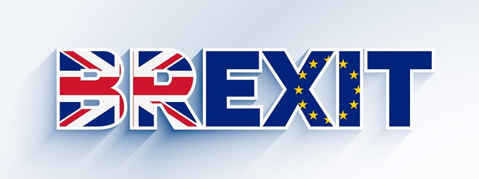

Passe o mouse por cima para ver as imagens! Exemplo:
Antecedentes
Aqui estão os principais antecedentes do Brexit:
Tradição eurocética no Reino Unido:
O Reino Unido sempre teve uma relação complicada com a União Europeia desde sua entrada em 1973. A ideia de soberania nacional e a relutância em ceder poderes para instituições supranacionais eram sentimentos presentes em uma parte da população britânica.Tratado de Maastricht:
Assinado em 1992, o Tratado de Maastricht marcou a criação da União Europeia como a conhecemos hoje. Ele estabeleceu a União Econômica e Monetária e introduziu a ideia de uma moeda única, o euro. O Reino Unido optou por não aderir à moeda única, o que refletiu uma certa hesitação em relação à integração europeia.Crise econômica e migração:
A crise financeira de 2008 e a subsequente crise da dívida na Europa afetaram vários países, incluindo o Reino Unido. As medidas de austeridade e a deterioração das condições econômicas alimentaram sentimentos anti-UE. Além disso, a crise migratória de 2015 levou a um aumento significativo na imigração para a Europa, o que contribuiu para o sentimento anti-imigração e reforçou as visões eurocéticas.Euroceticismo crescente na Europa:
O Brexit ocorreu em meio a um contexto mais amplo de crescente euroceticismo em vários países europeus. Partidos e movimentos populistas de direita, como a Frente Nacional na França e o Movimento Cinco Estrelas na Itália, ganharam força e questionaram a integração europeia. Essas tendências foram alimentadas por questões como a crise econômica, a migração e a percepção de falta de democracia na União Europeia.Referendo escocês de independência:
Em 2014, ocorreu um referendo na Escócia para decidir sobre a independência do Reino Unido. Embora a maioria dos escoceses tenha votado contra a independência naquele momento, o referendo trouxe à tona questões de identidade nacional e autonomia, que também foram relevantes no contexto do Brexit.
A Europa
A União Europeia (UE) é uma organização política e econômica que tem como objetivo promover a integração europeia através da cooperação em questões políticas, econômicas e sociais. A UE surgiu após a Segunda Guerra Mundial, como uma tentativa de unir os países europeus para evitar futuras guerras e promover a paz e a prosperidade na região.
O contexto histórico e geopolítico que levou à criação da UE começa com o fim da Segunda Guerra Mundial. Após o fim da guerra, a Europa estava devastada e em ruínas. A maioria dos países europeus estava em uma situação econômica precária, e a população estava sofrendo com a falta de alimentos, habitação e empregos. Além disso, a Europa estava dividida entre o Ocidente e o Leste, com a União Soviética controlando grande parte da Europa Oriental.
Para ajudar a reconstruir a Europa e evitar futuras guerras, os líderes políticos europeus começaram a buscar formas de unir os países da região. O primeiro passo nessa direção foi a criação da Comunidade Europeia do Carvão e do Aço (CECA) em 1951. A CECA uniu seis países europeus – França, Alemanha Ocidental, Itália, Bélgica, Holanda e Luxemburgo – em uma organização que controlava a produção e a distribuição de carvão e aço. O objetivo era evitar conflitos entre esses países, que haviam lutado duas guerras mundiais em um período de apenas 30 anos.
Em 1957, esses mesmos seis países fundaram a Comunidade Econômica Europeia (CEE), que estabeleceu um mercado comum entre os países membros. A CEE permitiu a livre circulação de bens, serviços, pessoas e capital entre os países membros, e estabeleceu políticas comuns em áreas como agricultura, pesca e transporte.
Ao longo das décadas seguintes, a UE foi se expandindo, com a adesão de novos países membros. Em 1993, a CEE foi transformada na União Europeia, que ampliou ainda mais a cooperação entre os países membros em áreas como segurança, justiça e política externa.
Hoje, a UE composta por 27 países membros, com uma população total de mais de 447 milhões de pessoas. A UE é a maior economia do mundo em termos de PIB, e é um importante ator político e econômico global.
O que são Blocos Econômicos?
Blocos econômicos são organizações que buscam promover a integração econômica entre os países membros por meio da eliminação de barreiras comerciais, estabelecimento de políticas comuns e coordenação de estratégias de desenvolvimento. Existem diferentes níveis de integração entre os países membros, que vão desde a simples zona de livre comércio até a união política e monetária.
Os principais níveis de integração entre os países membros dos blocos econômicos são:
Área de Livre Comércio:
Neste nível, os países membros concordam em eliminar as barreiras comerciais, como tarifas e quotas, entre si. Cada país mantém sua própria política comercial em relação a países fora do bloco.União Aduaneira:
Além de eliminar as barreiras comerciais entre os países membros, neste nível os países adotam uma política comercial comum em relação a países fora do bloco. Isso significa que os países membros aplicam as mesmas tarifas e quotas em relação a outros países.Mercado Comum:
Neste nível, além da eliminação das barreiras comerciais e da adoção de uma política comercial comum, os países membros também buscam a livre circulação de bens, serviços, capitais e pessoas entre si.União Monetária:
Neste nível, os países membros adotam uma moeda única e uma política monetária comum, gerenciada por uma instituição supranacional.

Os blocos econômicos mais populares do mundo incluem:
União Europeia (UE):
É o maior bloco econômico do mundo, com 27 países membros e uma população de mais de 447 milhões de pessoas. Foi criado em 1993 e possui um mercado comum, uma moeda única (o euro) e políticas comuns em áreas como agricultura, pesca e meio ambiente.Tratado de Livre Comércio da América do Norte (USMCA):
É um bloco econômico que inclui Estados Unidos, Canadá e México. Substituiu o NAFTA em 2020 e inclui políticas comuns em áreas como comércio, propriedade intelectual e trabalho.Mercado Comum do Sul (Mercosul):
É um bloco econômico composto por Argentina, Brasil, Paraguai e Uruguai, com a Venezuela atualmente suspensa. Foi criado em 1991 e possui um mercado comum e políticas comuns em áreas como agricultura, energia e indústria.Comunidade Econômica dos Estados da África Ocidental (CEDEAO):
É um bloco econômico que inclui 15 países da África Ocidental. Visa a promoção do desenvolvimento econômico regional, a estabilidade política e a integração.Associação das Nações do Sudeste Asiático (ASEAN):
É um bloco econômico composto por 10 países do sudeste asiático, incluindo Brunei, Camboja, Indonés. Busca a promoção da cooperação regional e o fortalecimento da posição do sudeste asiático no mercado internacional.
O termo Brexit
O termo "Brexit" é a junção das palavras "Britain" (Grã-Bretanha) e "exit" (saída) e é utilizado para se referir à decisão do Reino Unido de deixar a União Europeia (UE). O Brexit foi resultado de um referendo realizado em 23 de junho de 2016, no qual os eleitores britânicos votaram pela saída do país da UE termo "Brexit" passou a ser amplamente utilizado para descrever o processo de negociação e separação entre o Reino Unido e a União Europeia, bem como suas consequências políticas, econômicas e sociais. O Brexit teve um impacto significativo tanto no Reino Unido quanto na União Europeia, e suas ramificações ainda estão sendo avaliadas e implementadas.
O que é o Brexit?
O brexit, como já citado antes, se refere à decisão do Reino Unido de deixar a União Europeia (UE). Em um referendo realizado em 23 de junho de 2016, 51,9% dos eleitores britânicos votaram a favor da saída do Reino Unido da
O Brexit foi resultado de uma campanha política que defendia a independência do Reino Unido e o controle de suas próprias leis, fronteiras e políticas, bem como a redução da imigração europeia. O processo de saída do Reino Unido da UE foi iniciado em março de 2017, após a ativação do artigo 50 do Tratado da União Europeia, que estabelece as regras para a saída de um país do bloco.

Após intensas negociações, em 24 de dezembro de 2020 foi anunciado um acordo comercial entre o Reino Unido e a UE que entrou em vigor em 1º de janeiro de 2021. O acordo estabelece as regras para a relação comercial entre as partes, mas não abrange áreas como segurança, justiça e cooperação em outras áreas. O Reino Unido deixou de ser um Estado-membro da UE 31 de janeiro de 2020, e o período de transição para a implementação das mudanças decorrentes do Brexit terminou em 31 de dezembro de 2020. Desde então, o Reino Unido é considerado um país terceiro em relação à UE relações entre as partes continuam sendo objeto de negociações e ajustes.